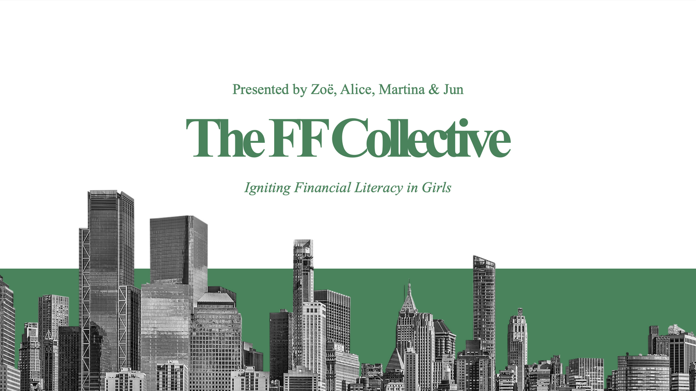
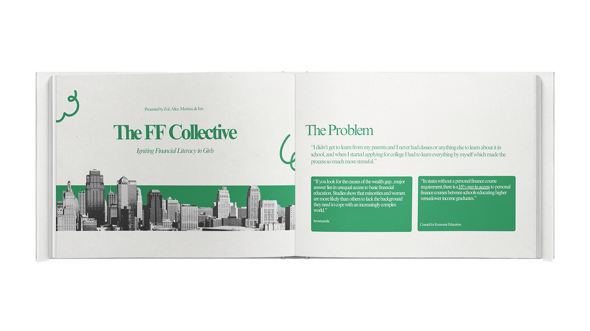
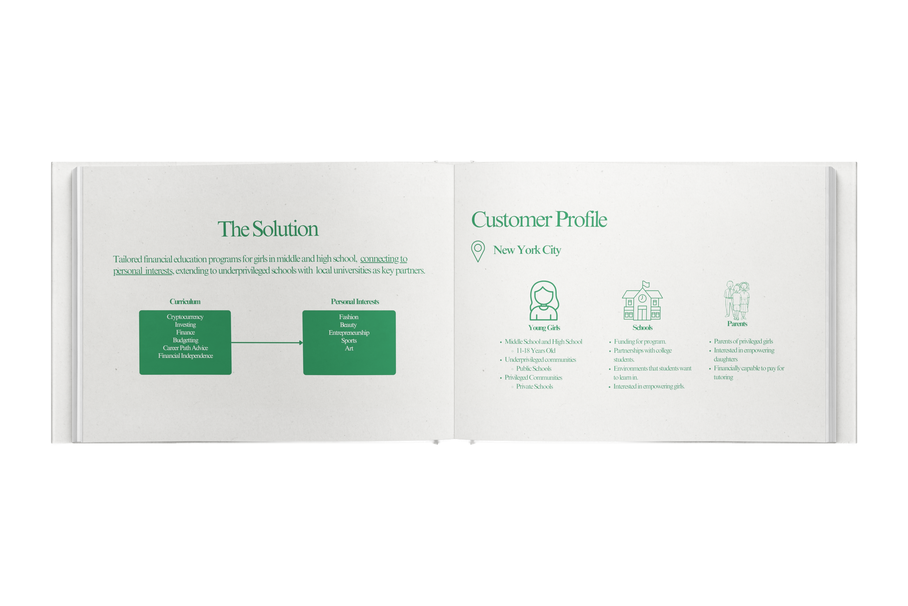
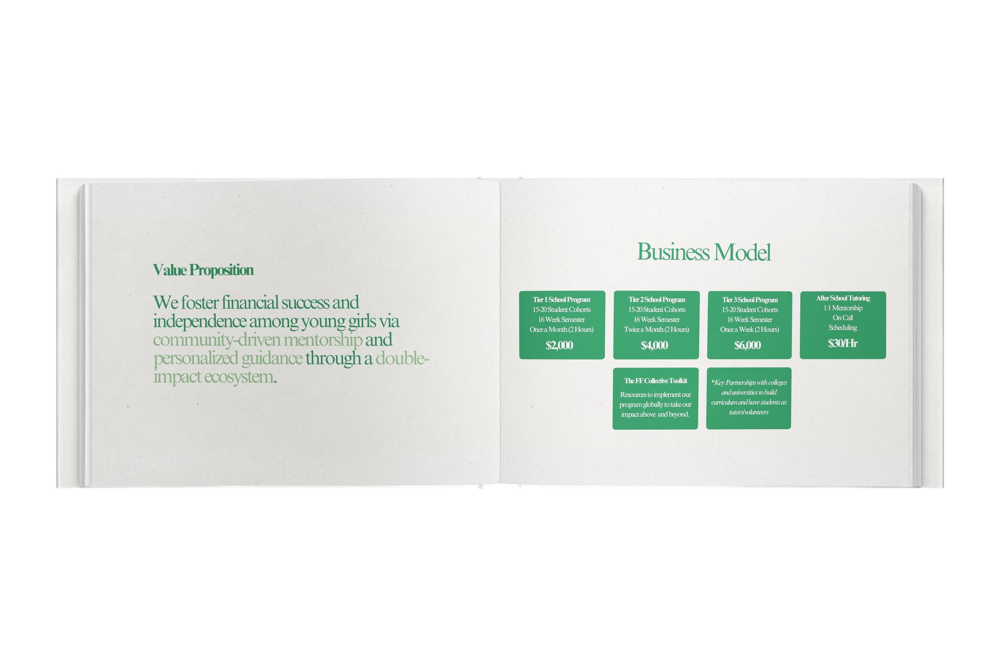

I ideated The FF Collective with Alice Almeida, Junhee Shim, and Martina Acosta to address a clear gap we saw in the education system: young women, especially in middle and high school, often graduate without essential financial literacy skills. Our mission was to provide them with tools to understand budgeting, saving, investing, credit, and the realities of financial independence—knowledge that can have a profound impact on their long-term economic security.
Our research showed the importance of this issue. According to the National Financial Educators Council, the average American loses over $1,800 annually due to a lack of personal finance knowledge, and women are disproportionately affected by pay gaps, higher student loan debt, and longer life expectancies. For girls, these disparities are compounded by cultural messaging that often sidelines them from money conversations and financial decision-making. From the beginning, we wanted our approach to be both educational and empowering—financial literacy not as a dry requirement, but as a pathway to agency and confidence. We designed a modular curriculum tailored to different age groups, combining practical exercises (like budgeting for a real-life scenario) with mentorship from women professionals in finance, entrepreneurship, and creative industries. Our goal was to meet students where they are, making lessons interactive and relevant to their goals—whether that meant saving for college, starting a business, or managing a first paycheck.
The “Collective” aspect was crucial. We envisioned partnerships between schools, community organizations, and female leaders who could serve as role models. This network would extend beyond one-off workshops, creating a sustained pipeline of support for young women as they navigate higher education, career entry, and entrepreneurship. To bring the concept to life, we built a comprehensive pitch deck and presented it to potential investors and school administrators. The response was encouraging—investors expressed interest not only in funding the program but also in connecting us with policy advocates and nonprofit partners. For me, this experience underscored how combining research-backed need, collaborative structure, and clear social impact can make a concept both fundable and scalable.


